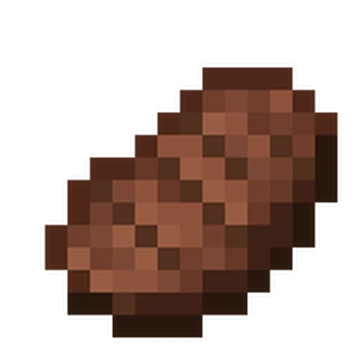
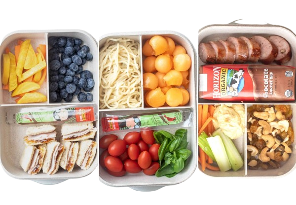

Meat

Meat is an important source of protein, iron, and other essential nutrients. Great for having it in your bento box
White Rice
One cup (158g) of cooked long-grain enriched white rice provides 205 calories, 45g of carbohydrates, 4g of protein, and 0.4g of fat. A great source of fast-acting carbohydrates for energy, perfect to have in your bento box


Fruits
Fruits are healthy foods that are also a sweet treat, perfect side dish to a bento box
Cake
Dessert may not be a healthy food choice, but, it is a delicious must have even for a bento box
Vegetable salad

Vegetables are healthy, nutritious foods that gives a balance meal to the bento box
Bento Box Facts
bento box is a single-portion, home-packed or take-out meal native to Japan that neatly organizes carbohydrates, proteins, vegetables, and pickles into separate compartments.
